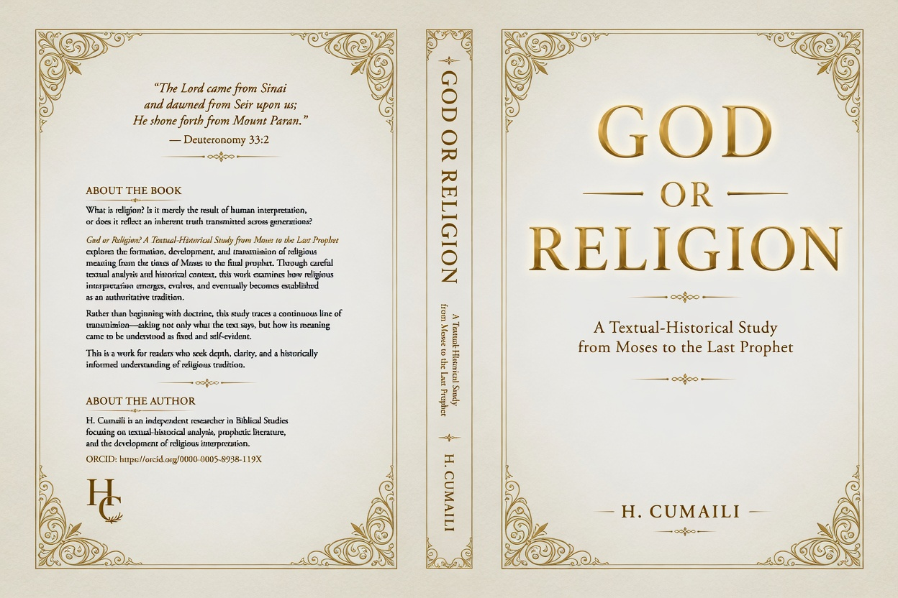

Biblical Hermeneutics
Semantic inquiry, textual interpretation, scriptural continuity, and meaning across traditions.
God First, Then Religion
Independent Research Institute in Biblical Hermeneutics, Comparative Abrahamic Studies, Torah, Gospel, and Quran Studies
From God to God
H. Cumaili Institute is dedicated to the study of divine revelation through biblical hermeneutics, comparative Abrahamic inquiry, and the continuity of prophetic meaning across scripture.
God First, Then Religion
H. Cumaili Institute advances the study of scripture, revelation, semantic meaning, and prophetic continuity through interdisciplinary Abrahamic inquiry.
Semantic inquiry, textual interpretation, scriptural continuity, and meaning across traditions.
Torah, Gospel, Quran, prophetic transmission, and intertextual continuity.
Divine reality, revelation, meaning, and theological language.
Manuscripts, transmission, semantic variance, and prophetic continuity.
A centralized institutional gateway to revelation studies, scripture, prophetic continuity, manuscript traditions, comparative inquiry, and theological research.
A Research Philosophy Rooted in Revelation, Meaning, and Intellectual Integrity
This institute emerges from three words that shaped an entire intellectual pursuit:
Not merely a phrase, but a philosophical orientation toward revelation, meaning, creation, existence, and the search for divine reality through historical testimony.
The purpose of this inquiry is not first to defend a tradition, preserve inherited assumptions, or begin with predetermined conclusions, but to move toward the originating source through the textual and historical continuity of the Abrahamic scriptures.
Accordingly, this project approaches the Torah, the Gospel, and the Quran through a disciplined commitment to scholarly integrity, comparative inquiry, and textual fidelity.
The texts are examined as they have reached us. Where tensions emerge, they are not ignored. Where difficulties appear, they are not concealed. Where continuity exists, it is explored.
No external framework is imposed upon the material before examination. The inquiry begins with the text.
What does revelation disclose about God?
The aim is neither polemic nor preference, but disciplined inquiry undertaken with academic seriousness, intellectual honesty, and responsibility before truth.
For if there is one place where bias must end, it is before the reality of God.
Before doctrine.
Before division.
Before conclusion.
Independent Researcher
H. Cumaili is an independent researcher specializing in Biblical Hermeneutics, Hebrew Semantics, Comparative Abrahamic Studies, Philosophy of Revelation, Textual Criticism, and Prophetic Continuity.
His work focuses on the study of divine revelation, scriptural continuity, theological language, semantic instability, and the historical transmission of sacred traditions across Abrahamic scripture.
Through long-term independent inquiry, the institute seeks to approach the question of God through textual, historical, and comparative analysis while maintaining scholarly integrity and methodological rigor.

A textual and historical inquiry into divine reality, prophetic continuity, revelation, and the theological development of God across Abrahamic scripture.
The work examines sacred texts through comparative, semantic, and historical analysis while exploring the continuity of revelation from Moses to the final prophet.
Explore the institute’s research, libraries, methodology, and ongoing inquiry into God, revelation, meaning, and prophetic continuity.
God First, Then Religion
From God to God